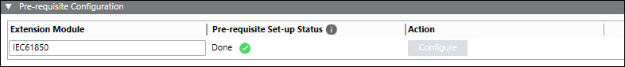
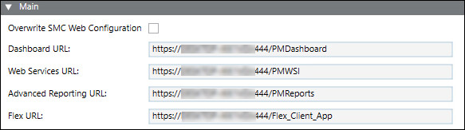
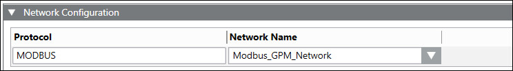
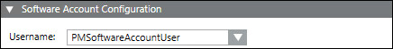
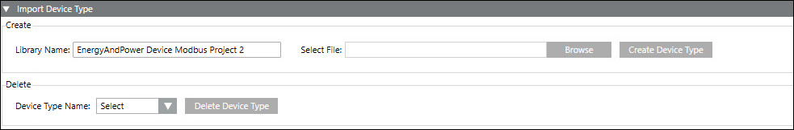

System Tab
In Engineering mode, when you select the Powermanager root node, you must first configure the parameters of the System tab that displays by default.
The following expanders let you configure the parameters of the System tab:
Pre-requisite Configuration Expander
- Extension Module: Displays list of all extension modules which can be configured.
- Pre-requisite Set-up Status: Displays the status of pre-requisite configuration
- Action: Allows you to configure pre-requisites for extension modules.

Main Expander
It allows you to configure the following fields:
- Overwrite SMC Web Configuration: Allows you to overwrite the URL configurations applied from the SMC.
- Dashboard URL: Displays the Dashboard URL.
- Web Service URL: Displays the Web Service URL.
- Advanced Reporting URL: Displays the Advance Reporting URL.
- Flex URL: Displays the Flex URL.

Network Configuration Expander
It allows you to configure the following fields:
- Protocol: Allows you to enter the protocol.
- Network Name: Allows you to enter the network name.

Software Account Configuration Expander
It allows you to configure the following field:
- Username: Allows you to select the software account user name from drop-down list.

Smoothing Expander
It allows you to configure the following fields:
- Historical Data Smoothing: Allows you to select between time based smoothing or value based smoothing.
Time: Allows you to select the interval for time based smoothing in the Smoothing Time Interval column.
Value: Allows you to enable value based smoothing. The current value is archived only when there is a change from the last read value. - Value Group: Displays the property group of the devices being polled.
- Smoothing Time Interval: Allows you to select smoothing time intervals for the selected value groups.
Import Device Type Expander
It allows you to create or delete new device types.
- Create
- Library name: Allows you to enter the name of the library under which the new device type is created.
- Select File: Allows you to browse and select the JSON file to be used to create the device type.
- Delete
- Device Type Name: Allows you to select the device type to be deleted.
